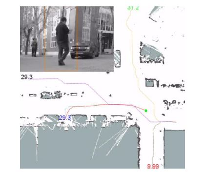

Loading...
Belén del Egido
Home
Pages
Sécurité Nationale
Sécurité Humaine
Applications
Applications
Quelques applications qu'ilustrent l'emploi de l'intelligence artificielle pour la sécurité.
Autres Pages
Sécurité Humaine
Sécurité Nationale
Introduction à l'Intelligence Artificielle
Applications
Maladies de l'oeil : l'intelligence artificielle meilleure que les médecins ?
Intelligence artificielle et le Militaire
Applications de l’intelligence artificielle dans le domaine de la santé afin d’améliorer l’efficacité
Une IA de Google surpasse les radiologues pour détecter le cancer du sein
Projet PRIC : Protection Robotisée d'Infrastructures Critiques.